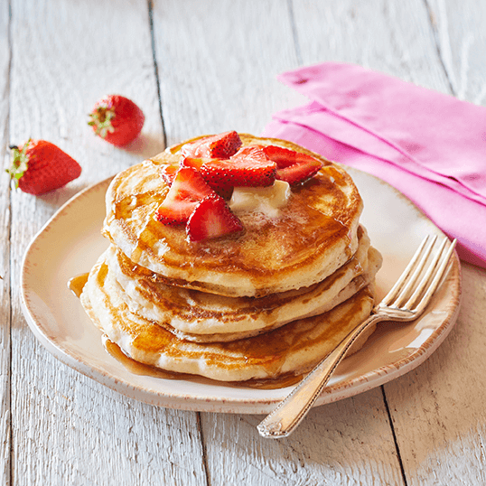

American style Pancakes

Description
This recipe is a master class of how to make incredible American style pancakes, to top with fruits and maple syrup for the ultimate hearty breakfast.
Ingredients
- 2 and 1/2 cups of flour
- 2 tablespoons of sugar
- 2 teaspoons of salt
- 1 teaspoon of baking soda
- 1 teaspoon of baking powder
- 8 ounces of half dark chocolate
- 2 and 1/2 cups of buttermilk
- 1 tablespoon of espresso powder
- 1 stick of unsalted melted butter
- 2 eggs
Steps
- Mix together all the dry ingredients with a whisk on a bowl.
- Separate the egg yolks from the egg whites, and whisk the yolks with the wet ingredients on another bowl.
- Mix the wet ingredients mix with the dry ingredients mix using a rubber spatula, mixing slow until integrated.
- Mix the unbeaten egg whites with the final mixture until the egg whites are fully combined, but don't mix aggressively.
- Let the batter rest for 15 to 30 minutes.
- Heat a pan on medium heat, and add 1 tablespoon of butter, let it melt and then turn to medium-low heat.
- Put 1/3 of the batter at a time, and let each pancake cook for about 2 to 3 minutes. Enjoy!
Home